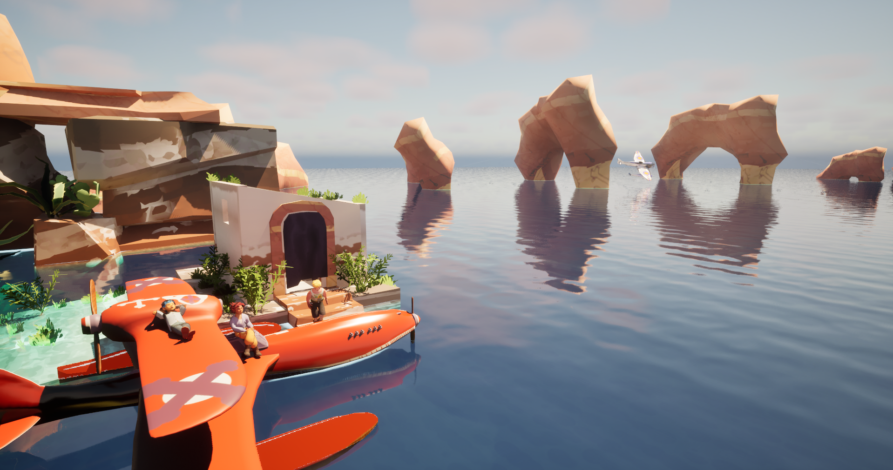
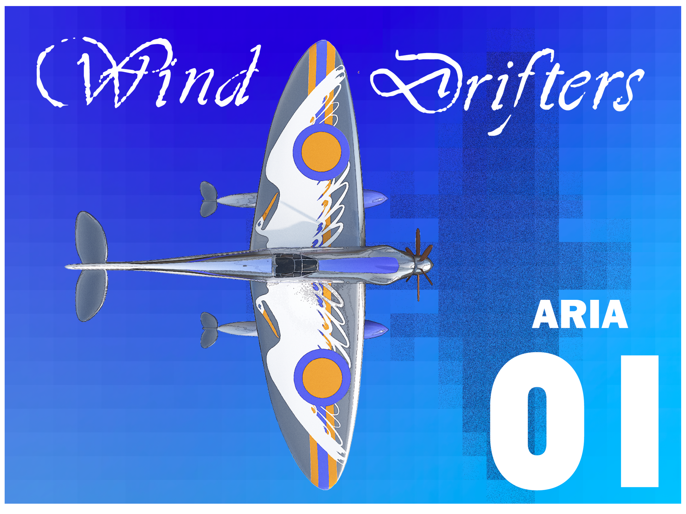

WindDrifters est un jeu de course et d’aventure en hydravion. Prenez part à une campagne de courses aériennes et de combats sur une multitude d’archipels. Chacun d’eux peut ensuite être rejoué contre vos amis en écran partagé.
Besoin d'un peu d'air frais ? Besoin de prendre le large ?
Wind Drifters est un projet de jeu vidéo indépendant qui vous invite à explorer un univers porté par le vent, où chaque déplacement devient une occasion de découvrir, d'expérimenter et de s'évader.
Pensé comme une expérience colorée et accessible, le projet cherche à mêler exploration, mouvement et découverte dans un monde dans lequel le joueur est libre de prendre son temps et de suivre son propre chemin.
Wind Drifters est actuellement en développement chez Arrabbiata Production. Ce projet représente notre volonté de créer des expériences originales, personnelles et indépendantes, avec une attention particulière portée à l'univers, au gameplay et à l'expérience du joueur.
```
We need you!
Grâce aux personnes qui soutiennent notre projet, nous allons pouvoir trouver la meilleure façon de produire le petit bijou de vitesse qu'est Wind Drifters ! Vous êtes nos Leviati et pour ça nous vous remercions.

Follow the game production on :